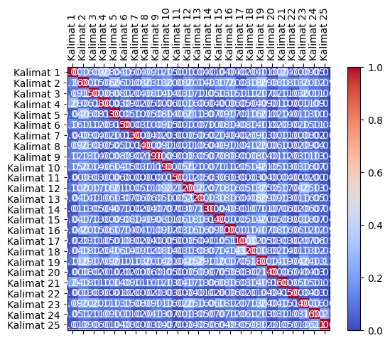

Crawling Berita#
#melakukan web scraping pada halaman berita yang berasal dari URL
import requests
from bs4 import BeautifulSoup
import nltk
# Unduh konten halaman web berita
url = "https://www.bbc.com/indonesia/articles/cxrvr59632eo"
response = requests.get(url)
html = response.text
# Parsing halaman web menggunakan BeautifulSoup
soup = BeautifulSoup(html, 'html.parser')
# Ekstraksi teks dari elemen-elemen yang berisi berita
article = soup.find('div', class_="bbc-1cvxiy9") # Sesuaikan dengan struktur HTML halaman web berita
# Periksa apakah elemen article ada sebelum mencoba mengambil teksnya
if article is not None:
article_text = article.get_text()
# Tokenisasi teks menjadi kalimat menggunakan nltk
nltk.download('punkt') # Pastikan Anda sudah mengunduh tokenisasi kalimat nltk
sentences = nltk.sent_tokenize(article_text)
# Cetak kalimat-kalimat
for sentence in sentences:
print(sentence)
else:
print("Elemen berita tidak ditemukan")
Apa tujuan akhir invasi darat Israel ke Gaza?
Sumber gambar, ReutersKeterangan gambar, Militer Israel telah memanggil sejumlah tentara cadangan untuk bertempur melawan Hamas.1 November 2023Paul KirbyBBC NewsPara pemimpin Israel telah menegaskan bahwa kelompok milisi Palestina, Hamas, akan dimusnahkan dari muka bumi dan Gaza tidak akan pernah kembali seperti semula.“Setiap anggota Hamas adalah orang mati,” kata Perdana Menteri Benjamin Netanyahu setelah kelompok milisi tersebut membunuh lebih dari 1.300 orang dalam serangan yang tak terduga ke Israel pada 7 Oktober.Tujuan Operasi Pedang Besi – operasi serangan balasan Israel atas serangan Hamas – nampaknya jauh lebih ambisius dibandingkan apa pun yang direncanakan militer Israel di Gaza sebelumnya.
Lewatkan Artikel-artikel yang direkomendasikan dan terus membacaArtikel-artikel yang direkomendasikanTentara Israel serbu RS Al-Shifa, Menkes Palestina minta bukti keberadaan markas HamasNasib sejumlah rumah sakit di Gaza yang lumpuh akibat perang Israel-Hamas Palestina: Tentara Israel ‘serbu’ RS Al-Shifa di Gaza dengan tankKomunitas Palestina terbesar di luar dunia Arab dan Israel berada di Cile, mengapa?Akhir dari Artikel-artikel yang direkomendasikanAkan tetapi, apakah itu operasi militer yang realistis, dan bagaimana para komandan militer Israel merealisasikan ambisi ini?
Invasi darat ke Jalur Gaza melibatkan pertempuran dari rumah ke rumah di perkotaan, membawa risiko besar bagi penduduk sipil.
Serangan udara Israel yang dilakukan tak lama setelah serangan Hamas, telah merenggut ribuan nyawa warga Gaza dan lebih dari 400.000 orang terpaksa mengungsi.
Selain invasi darat, militer Israel memiliki misi tambahan menyelamatkan sedikitnya 150 sandera, yang ditahan di lokasi yang tidak diketahui di seluruh Gaza.Herzi Halevi, kepala staf Pasukan Pertahanan Israel (IDF), berjanji untuk "membongkar" Hamas.
Namun, bagaimana nasib Gaza setelah 16 tahun dikuasai Hamas?
Sumber gambar, Ahmed Zakot/SOPA Images/LightRocketKeterangan gambar, Yahya Sinwar, pemimpin Hamas di Gaza diidentifikasi sebagai sasaran utama oleh Israel“Saya kira Israel tidak bisa membubarkan setiap anggota Hamas, karena ini adalah gagasan Islam ekstremis,” kata analis militer Amir Bar Shalom dari Radio Angkatan Darat Israel.
“Tetapi [Israel] dapat melemahkannya sebanyak yang [Israel] bisa sehingga Hamas tidak mempunyai kemampuan operasional.”Itu mungkin merupakan tujuan yang lebih realistis.
Sejauh ini, Israel telah berperang empat kali dengan Hamas, dan setiap upaya untuk menghentikan serangan roketnya selalu gagal.Juru bicara IDF, Letkol Jonathan Conricus, mengatakan bahwa pada akhir perang ini, Hamas seharusnya tidak lagi memiliki kapasitas militer untuk "mengancam atau membunuh warga sipil Israel".Invasi darat penuh dengan risikoOperasi militer bergantung pada beberapa faktor yang dapat menggagalkannya.Organisasi sayap Hamas, Brigade Izzedine al-Qassam, telah bersiap menghadapi serangan Israel.
Alat peledak telah dipasang, dan penyergapan direncanakan.
Mereka dapat menggunakan jaringan terowongan Hamas yang terkenal dan luas untuk menyerang pasukan Israel.Baca juga:Israel segera melancarkan serangan darat ke Gaza, bagaimana pertempuran bakal berlangsung?Perang Israel-Hamas: Netanyahu tolak gencatan senjata: 'Ini waktunya berperang'Pada 2014, batalion infanteri Israel menderita kerugian besar akibat ranjau anti-tank, penembak jitu dan penyergapan, sementara ratusan warga sipil tewas dalam pertempuran di lingkungan utara Kota Gaza.Itulah salah satu alasan Israel menuntut evakuasi 1,1 juta warga Palestina dari bagian utara Jalur Gaza.Warga Israel telah diperingatkan bahwa perang bisa memakan waktu berbulan-bulan, dan tercatat 360.000 tentara cadangan telah melapor untuk bertugas.Pertanyaannya adalah berapa lama Israel dapat menjalankan operasinya tanpa adanya tekanan internasional untuk mundur?Lembaga yang menangani pengungsi di bawah PBB telah memperingatkan bahwa Gaza dengan cepat menjadi “lubang neraka”.Jumlah korban tewas meningkat dengan cepat; Pasokan air, listrik, dan bahan bakar telah diputus, dan kini separuh penduduk diminta mengungsi dari wilayah lain.“Pemerintah dan militer merasa mendapat dukungan dari komunitas internasional – setidaknya dari para pemimpin Barat.
Filosofinya adalah 'mari kita bergerak, kita punya banyak waktu',” kata Yossi Melman, salah satu jurnalis keamanan dan intelijen terkemuka Israel.Namun cepat atau lambat dia yakin sekutu Israel akan turun tangan jika mereka melihat gambaran orang-orang kelaparan.Penyelamatan para sanderaLewati Podcast dan lanjutkan membacaInvestigasi: Skandal AdopsiInvestigasi untuk menyibak tabir adopsi ilegal dari Indonesia ke Belanda di masa laluEpisodeAkhir dari PodcastBanyak dari para sandera adalah warga Israel, namun terdapat juga sejumlah besar warga negara asing dan mereka yang memiliki kewarganegaraan ganda, sehingga beberapa negara lain, termasuk Amerika Serikat, Prancis, dan Inggris, memiliki kepentingan dalam operasi ini dan pembebasan warga negara mereka secara aman.
Presiden Prancis, Emmanuel Macron, telah berjanji kepada keluarga Prancis-Israel yang kerabatnya disandera Hamas untuk membawa pulang orang yang mereka cintai: "Prancis tidak akan pernah meninggalkan anak-anaknya.
"Sejauh mana nasib para sandera akan mempengaruhi perencana militer masih belum jelas, dan terdapat juga tekanan dalam negeri terhadap para pemimpin Israel.Lebih jauh tentang konflik Israel dan Hamas: Perkembangan terbaru konflik Israel-PalestinaSiapa Hamas dan bagaimana kiprahnya?
Sejarah konflik berkepanjangan Israel-PalestinaSejarah Jalur Gaza, ‘penjara terbuka paling besar di dunia’Amir Bar Shalom membandingkan situasi ini dengan insiden yang terjadi pada saat Olimpiade Munich tahun 1972, ketika sekelompok orang bersenjata Palestina menangkap atlet Israel dan membunuh 11 orang.Sebuah operasi diluncurkan untuk mencari dan membunuh semua orang yang terlibat dalam serangan tersebut dan dia yakin pemerintah ingin memburu semua orang di balik penculikan tersebut.Menyelamatkan begitu banyak orang yang ditahan di berbagai wilayah di Gaza mungkin tidak dapat dilakukan oleh pasukan komando unit elit Israel, Sayeret Matkal.
Untuk memutar video ini, aktifkan JavaScript atau coba di mesin pencari lainPlay video, "Kehidupan di Gaza : Mengapa konflik terus terjadi di sana?
", Durasi 7,1307:13Keterangan video, Kehidupan di Gaza : Mengapa konflik terus terjadi di sana?Hamas telah mengancam akan menembak sandera sebagai pencegah serangan Israel.Pada 2011, Israel menukar lebih dari 1.000 tahanan untuk pembebasan seorang tentara, Gilad Shalit, yang ditahan oleh Hamas selama lima tahun.
Namun Israel akan berpikir dua kali sebelum melepaskan tahanan secara besar-besaran, karena salah satu tahanan yang dibebaskan dalam pertukaran itu adalah Yahya Sinwar, yang kemudian menjadi pemimpin politik Hamas di Gaza.Negara tetangga mengawasi dengan cermatHal yang juga dapat mempengaruhi durasi dan hasil serangan darat adalah bagaimana reaksi negara-negara tetangga Israel.Mereka mungkin menghadapi peningkatan tuntutan dari Mesir, yang berbatasan dengan Gaza dan sudah mendorong agar bantuan diizinkan melalui perbatasan Rafah.“Semakin besar penderitaan yang dialami warga Gaza setelah operasi militer Israel, semakin besar pula tekanan yang akan dihadapi Mesir, agar terlihat seolah-olah mereka tidak berpaling dari Palestina,” kata Ofir Winter dari Institut Kajian Keamanan Nasional Israel.Namun hal itu tidak akan terjadi jika Kairo mengizinkan penyeberangan massal warga Gaza ke Mesir atau bertindak secara militer melawan Israel atas nama mereka, dia yakin.Sumber gambar, SAID KHATIB/AFPKeterangan gambar, Serangan udara dan artileri Israel telah membombardir Gaza setelah Hamas melakukan serangan terhadap warga Israel Perbatasan utara Israel dengan Lebanon juga berada dalam pengawasan ketat.Sejauh ini telah terjadi beberapa serangan lintas batas yang melibatkan kelompok militan Islam Hizbullah, namun serangan tersebut belum menjadi sebuah front baru terhadap Israel.Iran, sponsor utama Hizbullah, sudah mengancam akan meluncurkan “front baru” melawan Israel.
Hal-hal tersebut menjadi fokus peringatan Presiden AS Joe Biden baru-baru ini, ketika dia berkata: "Kepada negara mana pun, organisasi mana pun, siapa pun yang berpikir untuk mengambil keuntungan dari situasi ini, saya punya satu kata: Jangan!
"Sebuah kapal induk AS telah dikirim ke Mediterania Timur untuk menekankan pesan tersebut.Apa tujuan akhir Israel terhadap Gaza?Jika Hamas melemah secara signifikan, pertanyaannya adalah apa yang bisa dilakukan untuk menggantikannya?Israel menarik tentaranya dan ribuan pemukim keluar dari Jalur Gaza pada tahun 2005 dan tidak memiliki niat untuk kembali menduduki Kawasan itu.Ofir Winter yakin peralihan kekuasaan berpotensi membuka jalan bagi kembalinya Otoritas Palestina (PA) secara bertahap, yang diusir dari Gaza oleh Hamas pada tahun 2007.
PA, yang bukan kelompok milisi, saat ini menguasai sebagian Tepi Barat.
Baca juga:Apa hasil analisis terbaru dari bukti-bukti di lokasi ledakan rumah sakit di Gaza?Perang Israel-Hamas: Netanyahu tolak gencatan senjata: 'Ini waktunya berperang'Kesaksian warga Thailand yang terperangkap perang Israel-Hamas: 'Kami melompati tembok dan ditembaki dari belakang'Mesir juga akan menyambut negara tetangganya yang lebih pragmatis, ujarnya.Infrastruktur Gaza yang hancur pada akhirnya harus dibangun kembali seperti setelah perang sebelumnya.Bahkan sebelum kekejaman Hamas di Israel, terdapat pembatasan ketat terhadap “barang-barang penggunaan ganda” yang memasuki Gaza yang dapat memiliki peran militer dan juga sipil.
Israel ingin menerapkan pembatasan yang lebih ketat.Ada seruan untuk membangun zona penyangga yang luas di sepanjang pagar Gaza untuk memberikan perlindungan yang lebih besar bagi komunitas Israel.
Mantan kepala dinas keamanan Shin Bet, Yoram Cohen, yakin zona "tembak di tempat" sepanjang 2 km akan diperlukan untuk menggantikan zona yang ada.Apapun hasil perangnya, Israel ingin memastikan serangan serupa tidak akan terjadi lagi.Topik terkaitMesirIsrael-PalestinaPolitikMiliterTimur tengahDunia ArabIsrael Palestina
[nltk_data] Downloading package punkt to /root/nltk_data...
[nltk_data] Package punkt is already up-to-date!
#menghitung dan mencetak nilai TF-IDF (Term Frequency-Inverse Document Frequency)
#untuk setiap kata dalam setiap kalimat dari teks yang telah di-tokenisasi sebelumnya.
from sklearn.feature_extraction.text import TfidfVectorizer
# Inisialisasi penghitung TF-IDF
tfidf_vectorizer = TfidfVectorizer()
# Hitung TF-IDF
tfidf_matrix = tfidf_vectorizer.fit_transform(sentences)
# Daftar kata kunci
feature_names = tfidf_vectorizer.get_feature_names_out()
# Konversi matriks TF-IDF menjadi bentuk yang lebih mudah dibaca
tfidf_values = tfidf_matrix.toarray()
# Cetak TF-IDF untuk setiap kata dalam setiap kalimat
for i, sentence in enumerate(sentences):
print(f"Kalimat {i + 1}: {sentence}")
for j, word in enumerate(feature_names):
tfidf_value = tfidf_values[i][j]
if tfidf_value > 0:
print(f"{word}: {tfidf_value:.4f}")
print()
Kalimat 1: Apa tujuan akhir invasi darat Israel ke Gaza?
akhir: 0.4128
apa: 0.4128
darat: 0.3395
gaza: 0.2220
invasi: 0.4128
israel: 0.1967
ke: 0.3395
tujuan: 0.4128
Kalimat 2: Sumber gambar, ReutersKeterangan gambar, Militer Israel telah memanggil sejumlah tentara cadangan untuk bertempur melawan Hamas.1 November 2023Paul KirbyBBC NewsPara pemimpin Israel telah menegaskan bahwa kelompok milisi Palestina, Hamas, akan dimusnahkan dari muka bumi dan Gaza tidak akan pernah kembali seperti semula.“Setiap anggota Hamas adalah orang mati,” kata Perdana Menteri Benjamin Netanyahu setelah kelompok milisi tersebut membunuh lebih dari 1.300 orang dalam serangan yang tak terduga ke Israel pada 7 Oktober.Tujuan Operasi Pedang Besi – operasi serangan balasan Israel atas serangan Hamas – nampaknya jauh lebih ambisius dibandingkan apa pun yang direncanakan militer Israel di Gaza sebelumnya.
2023paul: 0.1170
300: 0.1170
adalah: 0.0759
akan: 0.1353
ambisius: 0.1170
anggota: 0.1037
apa: 0.0870
atas: 0.1037
bahwa: 0.0943
balasan: 0.1170
benjamin: 0.1170
bertempur: 0.1170
besi: 0.1170
bumi: 0.1170
cadangan: 0.1037
dalam: 0.0759
dan: 0.0556
dari: 0.1112
di: 0.0509
dibandingkan: 0.1170
dimusnahkan: 0.1170
direncanakan: 0.1037
gambar: 0.1886
gaza: 0.0936
hamas: 0.1951
israel: 0.2072
jauh: 0.1037
kata: 0.0810
ke: 0.0715
kelompok: 0.1886
kembali: 0.0943
kirbybbc: 0.1170
lebih: 0.1430
mati: 0.1170
melawan: 0.1037
memanggil: 0.1170
membunuh: 0.0943
menegaskan: 0.1170
menteri: 0.1170
milisi: 0.2074
militer: 0.1284
muka: 0.1170
nampaknya: 0.1170
netanyahu: 0.0943
newspara: 0.1170
november: 0.1170
oktober: 0.1170
operasi: 0.1619
orang: 0.1619
pada: 0.0715
palestina: 0.0715
pedang: 0.1170
pemimpin: 0.0810
perdana: 0.1170
pernah: 0.1037
pun: 0.1037
reutersketerangan: 0.1170
sebelumnya: 0.1037
sejumlah: 0.0943
semula: 0.1170
seperti: 0.1037
serangan: 0.2030
setelah: 0.0810
setiap: 0.0943
sumber: 0.0943
tak: 0.1037
telah: 0.1284
tentara: 0.0870
terduga: 0.1170
tersebut: 0.0810
tidak: 0.0611
tujuan: 0.0870
untuk: 0.0531
yang: 0.0862
Kalimat 3: Lewatkan Artikel-artikel yang direkomendasikan dan terus membacaArtikel-artikel yang direkomendasikanTentara Israel serbu RS Al-Shifa, Menkes Palestina minta bukti keberadaan markas HamasNasib sejumlah rumah sakit di Gaza yang lumpuh akibat perang Israel-Hamas Palestina: Tentara Israel ‘serbu’ RS Al-Shifa di Gaza dengan tankKomunitas Palestina terbesar di luar dunia Arab dan Israel berada di Cile, mengapa?Akhir dari Artikel-artikel yang direkomendasikanAkan tetapi, apakah itu operasi militer yang realistis, dan bagaimana para komandan militer Israel merealisasikan ambisi ini?
akhir: 0.0784
akibat: 0.0935
al: 0.1870
ambisi: 0.1055
apakah: 0.1055
arab: 0.1055
artikel: 0.5274
bagaimana: 0.0730
berada: 0.0935
bukti: 0.0935
cile: 0.1055
dan: 0.1503
dari: 0.0501
dengan: 0.0730
di: 0.1835
direkomendasikan: 0.1055
direkomendasikanakan: 0.1055
direkomendasikantentara: 0.1055
dunia: 0.0935
gaza: 0.0843
hamas: 0.0440
hamasnasib: 0.1055
ini: 0.0525
israel: 0.1868
itu: 0.0784
keberadaan: 0.1055
komandan: 0.1055
lewatkan: 0.1055
luar: 0.1055
lumpuh: 0.1055
markas: 0.1055
membacaartikel: 0.1055
mengapa: 0.0850
menkes: 0.1055
merealisasikan: 0.1055
militer: 0.1157
minta: 0.1055
operasi: 0.0730
palestina: 0.1934
para: 0.0784
perang: 0.0784
realistis: 0.0935
rs: 0.2110
rumah: 0.0850
sakit: 0.0935
sejumlah: 0.0850
serbu: 0.2110
shifa: 0.2110
tankkomunitas: 0.1055
tentara: 0.0784
terbesar: 0.1055
terus: 0.0850
tetapi: 0.0935
yang: 0.1944
Kalimat 4: Invasi darat ke Jalur Gaza melibatkan pertempuran dari rumah ke rumah di perkotaan, membawa risiko besar bagi penduduk sipil.
bagi: 0.2242
besar: 0.1805
darat: 0.1701
dari: 0.1322
di: 0.1210
gaza: 0.1113
invasi: 0.2068
jalur: 0.2068
ke: 0.3402
melibatkan: 0.2467
membawa: 0.2467
penduduk: 0.2467
perkotaan: 0.2784
pertempuran: 0.2467
risiko: 0.2784
rumah: 0.4485
sipil: 0.2068
Kalimat 5: Serangan udara Israel yang dilakukan tak lama setelah serangan Hamas, telah merenggut ribuan nyawa warga Gaza dan lebih dari 400.000 orang terpaksa mengungsi.
000: 0.2180
400: 0.2706
dan: 0.1285
dari: 0.1285
dilakukan: 0.2180
gaza: 0.1081
hamas: 0.1127
israel: 0.0958
lama: 0.2398
lebih: 0.1654
mengungsi: 0.2398
merenggut: 0.2706
nyawa: 0.2706
orang: 0.1872
ribuan: 0.2398
serangan: 0.3128
setelah: 0.1872
tak: 0.2398
telah: 0.1484
terpaksa: 0.2706
udara: 0.2398
warga: 0.1755
yang: 0.0997
Kalimat 6: Selain invasi darat, militer Israel memiliki misi tambahan menyelamatkan sedikitnya 150 sandera, yang ditahan di lokasi yang tidak diketahui di seluruh Gaza.Herzi Halevi, kepala staf Pasukan Pertahanan Israel (IDF), berjanji untuk "membongkar" Hamas.
150: 0.2127
berjanji: 0.1885
darat: 0.1300
di: 0.1850
diketahui: 0.2127
ditahan: 0.1714
gaza: 0.0850
halevi: 0.2127
hamas: 0.0886
herzi: 0.2127
idf: 0.1885
invasi: 0.1581
israel: 0.1507
kepala: 0.1885
lokasi: 0.1885
membongkar: 0.2127
memiliki: 0.1472
menyelamatkan: 0.1885
militer: 0.1167
misi: 0.2127
pasukan: 0.1714
pertahanan: 0.2127
sandera: 0.1581
sedikitnya: 0.2127
selain: 0.2127
seluruh: 0.2127
staf: 0.2127
tambahan: 0.2127
tidak: 0.1110
untuk: 0.0966
yang: 0.1568
Kalimat 7: Namun, bagaimana nasib Gaza setelah 16 tahun dikuasai Hamas?
16: 0.4353
bagaimana: 0.3012
dikuasai: 0.4353
gaza: 0.1740
hamas: 0.1814
namun: 0.3507
nasib: 0.3858
setelah: 0.3012
tahun: 0.3234
Kalimat 8: Sumber gambar, Ahmed Zakot/SOPA Images/LightRocketKeterangan gambar, Yahya Sinwar, pemimpin Hamas di Gaza diidentifikasi sebagai sasaran utama oleh Israel“Saya kira Israel tidak bisa membubarkan setiap anggota Hamas, karena ini adalah gagasan Islam ekstremis,” kata analis militer Amir Bar Shalom dari Radio Angkatan Darat Israel.
adalah: 0.1136
ahmed: 0.1751
amir: 0.1552
analis: 0.1751
anggota: 0.1552
angkatan: 0.1751
bar: 0.1552
bisa: 0.1301
darat: 0.1070
dari: 0.0832
di: 0.0761
diidentifikasi: 0.1751
ekstremis: 0.1751
gagasan: 0.1751
gambar: 0.2821
gaza: 0.0700
hamas: 0.1459
images: 0.1751
ini: 0.0871
islam: 0.1552
israel: 0.1860
karena: 0.1552
kata: 0.1212
kira: 0.1751
lightrocketketerangan: 0.1751
membubarkan: 0.1751
militer: 0.0961
oleh: 0.1301
pemimpin: 0.1212
radio: 0.1751
sasaran: 0.1751
saya: 0.1552
sebagai: 0.1552
setiap: 0.1411
shalom: 0.1552
sinwar: 0.1552
sopa: 0.1751
sumber: 0.1411
tidak: 0.0914
utama: 0.1552
yahya: 0.1552
zakot: 0.1751
Kalimat 9: “Tetapi [Israel] dapat melemahkannya sebanyak yang [Israel] bisa sehingga Hamas tidak mempunyai kemampuan operasional.”Itu mungkin merupakan tujuan yang lebih realistis.
bisa: 0.2065
dapat: 0.1803
hamas: 0.1158
israel: 0.1968
itu: 0.2065
kemampuan: 0.2779
lebih: 0.1698
melemahkannya: 0.2779
mempunyai: 0.2779
merupakan: 0.2779
mungkin: 0.2239
operasional: 0.2779
realistis: 0.2463
sebanyak: 0.2779
sehingga: 0.2463
tetapi: 0.2463
tidak: 0.1450
tujuan: 0.2065
yang: 0.2048
Kalimat 10: Sejauh ini, Israel telah berperang empat kali dengan Hamas, dan setiap upaya untuk menghentikan serangan roketnya selalu gagal.Juru bicara IDF, Letkol Jonathan Conricus, mengatakan bahwa pada akhir perang ini, Hamas seharusnya tidak lagi memiliki kapasitas militer untuk "mengancam atau membunuh warga sipil Israel".Invasi darat penuh dengan risikoOperasi militer bergantung pada beberapa faktor yang dapat menggagalkannya.Organisasi sayap Hamas, Brigade Izzedine al-Qassam, telah bersiap menghadapi serangan Israel.
akhir: 0.1051
al: 0.1253
atau: 0.1051
bahwa: 0.1139
beberapa: 0.1139
bergantung: 0.1414
berperang: 0.1139
bersiap: 0.1414
bicara: 0.1414
brigade: 0.1414
conricus: 0.1414
dan: 0.0672
dapat: 0.0917
darat: 0.0864
dengan: 0.1957
empat: 0.1414
faktor: 0.1414
gagal: 0.1414
hamas: 0.1768
idf: 0.1253
ini: 0.1407
invasi: 0.1051
israel: 0.1502
izzedine: 0.1414
jonathan: 0.1414
juru: 0.1414
kali: 0.1253
kapasitas: 0.1414
lagi: 0.1253
letkol: 0.1414
membunuh: 0.1139
memiliki: 0.0978
mengancam: 0.1139
mengatakan: 0.1414
menggagalkannya: 0.1414
menghadapi: 0.1253
menghentikan: 0.1414
militer: 0.1551
organisasi: 0.1253
pada: 0.1729
penuh: 0.1414
perang: 0.1051
qassam: 0.1414
risikooperasi: 0.1414
roketnya: 0.1414
sayap: 0.1414
seharusnya: 0.1414
sejauh: 0.1139
selalu: 0.1414
serangan: 0.1635
setiap: 0.1139
sipil: 0.1051
telah: 0.1551
tidak: 0.0738
untuk: 0.1285
upaya: 0.1414
warga: 0.0917
yang: 0.0521
Kalimat 11: Alat peledak telah dipasang, dan penyergapan direncanakan.
alat: 0.4429
dan: 0.2104
dipasang: 0.4429
direncanakan: 0.3925
peledak: 0.4429
penyergapan: 0.3925
telah: 0.2430
Kalimat 12: Mereka dapat menggunakan jaringan terowongan Hamas yang terkenal dan luas untuk menyerang pasukan Israel.Baca juga:Israel segera melancarkan serangan darat ke Gaza, bagaimana pertempuran bakal berlangsung?Perang Israel-Hamas: Netanyahu tolak gencatan senjata: 'Ini waktunya berperang'Pada 2014, batalion infanteri Israel menderita kerugian besar akibat ranjau anti-tank, penembak jitu dan penyergapan, sementara ratusan warga sipil tewas dalam pertempuran di lingkungan utara Kota Gaza.Itulah salah satu alasan Israel menuntut evakuasi 1,1 juta warga Palestina dari bagian utara Jalur Gaza.Warga Israel telah diperingatkan bahwa perang bisa memakan waktu berbulan-bulan, dan tercatat 360.000 tentara cadangan telah melapor untuk bertugas.Pertanyaannya adalah berapa lama Israel dapat menjalankan operasinya tanpa adanya tekanan internasional untuk mundur?Lembaga yang menangani pengungsi di bawah PBB telah memperingatkan bahwa Gaza dengan cepat menjadi “lubang neraka”.Jumlah korban tewas meningkat dengan cepat; Pasokan air, listrik, dan bahan bakar telah diputus, dan kini separuh penduduk diminta mengungsi dari wilayah lain.“Pemerintah dan militer merasa mendapat dukungan dari komunitas internasional – setidaknya dari para pemimpin Barat.
000: 0.0649
2014: 0.0806
360: 0.0806
adalah: 0.0522
adanya: 0.0806
air: 0.0806
akibat: 0.0714
alasan: 0.0806
anti: 0.0806
baca: 0.0714
bagaimana: 0.0557
bagian: 0.0806
bahan: 0.0806
bahwa: 0.1298
bakal: 0.0806
bakar: 0.0806
barat: 0.0714
batalion: 0.0806
bawah: 0.0806
berapa: 0.0806
berbulan: 0.0806
berlangsung: 0.0806
berperang: 0.0649
bertugas: 0.0806
besar: 0.0522
bisa: 0.0598
bulan: 0.0806
cadangan: 0.0714
cepat: 0.1428
dalam: 0.0522
dan: 0.2295
dapat: 0.1045
darat: 0.0492
dari: 0.1530
dengan: 0.1115
di: 0.0700
diminta: 0.0806
diperingatkan: 0.0806
diputus: 0.0806
dukungan: 0.0806
evakuasi: 0.0806
gaza: 0.1288
gencatan: 0.0714
hamas: 0.0671
infanteri: 0.0806
ini: 0.0401
internasional: 0.1611
israel: 0.1997
itulah: 0.0806
jalur: 0.0598
jaringan: 0.0806
jitu: 0.0806
juga: 0.0557
jumlah: 0.0806
juta: 0.0806
ke: 0.0492
kerugian: 0.0806
kini: 0.0806
komunitas: 0.0714
korban: 0.0806
kota: 0.0806
lain: 0.0714
lama: 0.0714
lembaga: 0.0806
lingkungan: 0.0806
listrik: 0.0806
luas: 0.0714
lubang: 0.0806
melancarkan: 0.0806
melapor: 0.0806
memakan: 0.0806
memperingatkan: 0.0806
menangani: 0.0806
mendapat: 0.0806
menderita: 0.0806
menggunakan: 0.0806
mengungsi: 0.0714
meningkat: 0.0806
menjadi: 0.0649
menjalankan: 0.0806
menuntut: 0.0806
menyerang: 0.0806
merasa: 0.0806
mereka: 0.0598
militer: 0.0442
mundur: 0.0806
neraka: 0.0806
netanyahu: 0.0649
operasinya: 0.0806
pada: 0.0492
palestina: 0.0492
para: 0.0598
pasokan: 0.0806
pasukan: 0.0649
pbb: 0.0806
pemerintah: 0.0714
pemimpin: 0.0557
penduduk: 0.0714
penembak: 0.0806
pengungsi: 0.0806
penyergapan: 0.0714
perang: 0.1197
pertanyaannya: 0.0714
pertempuran: 0.1428
ranjau: 0.0806
ratusan: 0.0806
salah: 0.0649
satu: 0.0598
segera: 0.0806
sementara: 0.0806
senjata: 0.0714
separuh: 0.0806
serangan: 0.0466
setidaknya: 0.0806
sipil: 0.0598
tank: 0.0806
tanpa: 0.0806
tekanan: 0.0649
telah: 0.1767
tentara: 0.0598
tercatat: 0.0806
terkenal: 0.0806
terowongan: 0.0806
tewas: 0.1611
tolak: 0.0714
untuk: 0.1098
utara: 0.1428
waktu: 0.0714
waktunya: 0.0714
warga: 0.1567
wilayah: 0.0714
yang: 0.0594
Kalimat 13: Filosofinya adalah 'mari kita bergerak, kita punya banyak waktu',” kata Yossi Melman, salah satu jurnalis keamanan dan intelijen terkemuka Israel.Namun cepat atau lambat dia yakin sekutu Israel akan turun tangan jika mereka melihat gambaran orang-orang kelaparan.Penyelamatan para sanderaLewati Podcast dan lanjutkan membacaInvestigasi: Skandal AdopsiInvestigasi untuk menyibak tabir adopsi ilegal dari Indonesia ke Belanda di masa laluEpisodeAkhir dari PodcastBanyak dari para sandera adalah warga Israel, namun terdapat juga sejumlah besar warga negara asing dan mereka yang memiliki kewarganegaraan ganda, sehingga beberapa negara lain, termasuk Amerika Serikat, Prancis, dan Inggris, memiliki kepentingan dalam operasi ini dan pembebasan warga negara mereka secara aman.
adalah: 0.1339
adopsi: 0.1032
adopsiinvestigasi: 0.1032
akan: 0.0597
aman: 0.1032
amerika: 0.1032
asing: 0.1032
atau: 0.0767
banyak: 0.0915
beberapa: 0.0831
belanda: 0.1032
bergerak: 0.1032
besar: 0.0669
cepat: 0.0915
dalam: 0.0669
dan: 0.2451
dari: 0.1470
di: 0.0449
dia: 0.0767
filosofinya: 0.1032
gambaran: 0.1032
ganda: 0.0915
ilegal: 0.1032
indonesia: 0.1032
inggris: 0.1032
ini: 0.0513
intelijen: 0.1032
israel: 0.1096
jika: 0.0831
juga: 0.0714
jurnalis: 0.1032
kata: 0.0714
ke: 0.0631
keamanan: 0.0831
kelaparan: 0.1032
kepentingan: 0.1032
kewarganegaraan: 0.1032
kita: 0.2064
lain: 0.0915
laluepisodeakhir: 0.1032
lambat: 0.1032
lanjutkan: 0.1032
mari: 0.1032
masa: 0.1032
melihat: 0.1032
melman: 0.1032
membacainvestigasi: 0.1032
memiliki: 0.1428
menyibak: 0.1032
mereka: 0.2300
namun: 0.1663
negara: 0.2300
operasi: 0.0714
orang: 0.1428
para: 0.1533
pembebasan: 0.0915
penyelamatan: 0.1032
podcast: 0.1032
podcastbanyak: 0.1032
prancis: 0.0915
punya: 0.0915
salah: 0.0831
sandera: 0.0767
sanderalewati: 0.1032
satu: 0.0767
secara: 0.0831
sehingga: 0.0915
sejumlah: 0.0831
sekutu: 0.1032
serikat: 0.1032
skandal: 0.1032
tabir: 0.1032
tangan: 0.1032
terdapat: 0.0831
terkemuka: 0.1032
termasuk: 0.1032
turun: 0.1032
untuk: 0.0469
waktu: 0.0915
warga: 0.2008
yakin: 0.0714
yang: 0.0380
yossi: 0.1032
Kalimat 14: Presiden Prancis, Emmanuel Macron, telah berjanji kepada keluarga Prancis-Israel yang kerabatnya disandera Hamas untuk membawa pulang orang yang mereka cintai: "Prancis tidak akan pernah meninggalkan anak-anaknya.
akan: 0.1180
anak: 0.2042
anaknya: 0.2042
berjanji: 0.1810
cintai: 0.2042
disandera: 0.2042
emmanuel: 0.2042
hamas: 0.0851
israel: 0.0723
keluarga: 0.2042
kepada: 0.1810
kerabatnya: 0.2042
macron: 0.2042
membawa: 0.1810
meninggalkan: 0.2042
mereka: 0.1517
orang: 0.1413
pernah: 0.1810
prancis: 0.5429
presiden: 0.1810
pulang: 0.2042
telah: 0.1120
tidak: 0.1066
untuk: 0.0927
yang: 0.1505
Kalimat 15: "Sejauh mana nasib para sandera akan mempengaruhi perencana militer masih belum jelas, dan terdapat juga tekanan dalam negeri terhadap para pemimpin Israel.Lebih jauh tentang konflik Israel dan Hamas: Perkembangan terbaru konflik Israel-PalestinaSiapa Hamas dan bagaimana kiprahnya?
akan: 0.1115
bagaimana: 0.1334
belum: 0.1709
dalam: 0.1251
dan: 0.2747
hamas: 0.1607
israel: 0.2048
jauh: 0.1709
jelas: 0.1928
juga: 0.1334
kiprahnya: 0.1928
konflik: 0.2865
lebih: 0.1178
mana: 0.1709
masih: 0.1928
mempengaruhi: 0.1709
militer: 0.1058
nasib: 0.1709
negeri: 0.1928
palestinasiapa: 0.1928
para: 0.2865
pemimpin: 0.1334
perencana: 0.1928
perkembangan: 0.1928
sandera: 0.1433
sejauh: 0.1553
tekanan: 0.1553
tentang: 0.1928
terbaru: 0.1709
terdapat: 0.1553
terhadap: 0.1433
Kalimat 16: Sejarah konflik berkepanjangan Israel-PalestinaSejarah Jalur Gaza, ‘penjara terbuka paling besar di dunia’Amir Bar Shalom membandingkan situasi ini dengan insiden yang terjadi pada saat Olimpiade Munich tahun 1972, ketika sekelompok orang bersenjata Palestina menangkap atlet Israel dan membunuh 11 orang.Sebuah operasi diluncurkan untuk mencari dan membunuh semua orang yang terlibat dalam serangan tersebut dan dia yakin pemerintah ingin memburu semua orang di balik penculikan tersebut.Menyelamatkan begitu banyak orang yang ditahan di berbagai wilayah di Gaza mungkin tidak dapat dilakukan oleh pasukan komando unit elit Israel, Sayeret Matkal.
11: 0.1134
1972: 0.1134
amir: 0.1005
atlet: 0.1134
balik: 0.1134
banyak: 0.1005
bar: 0.1005
begitu: 0.1134
berbagai: 0.1134
berkepanjangan: 0.1134
bersenjata: 0.1134
besar: 0.0735
dalam: 0.0735
dan: 0.1615
dapat: 0.0735
dengan: 0.0784
di: 0.1972
dia: 0.0842
dilakukan: 0.0913
diluncurkan: 0.1134
ditahan: 0.0913
dunia: 0.1005
elit: 0.1134
gaza: 0.0906
ingin: 0.0913
ini: 0.0564
insiden: 0.1134
israel: 0.1204
jalur: 0.0842
ketika: 0.1005
komando: 0.1134
konflik: 0.0842
matkal: 0.1134
membandingkan: 0.1134
membunuh: 0.1827
memburu: 0.1134
menangkap: 0.1134
mencari: 0.1134
menyelamatkan: 0.1005
mungkin: 0.0913
munich: 0.1134
oleh: 0.0842
olimpiade: 0.1134
operasi: 0.0784
orang: 0.3922
pada: 0.0693
palestina: 0.0693
palestinasejarah: 0.1134
paling: 0.1134
pasukan: 0.0913
pemerintah: 0.1005
penculikan: 0.1134
penjara: 0.1134
saat: 0.1005
sayeret: 0.1134
sebuah: 0.0913
sejarah: 0.1134
sekelompok: 0.1134
semua: 0.2267
serangan: 0.0655
shalom: 0.1005
situasi: 0.1005
tahun: 0.0842
terbuka: 0.1134
terjadi: 0.0784
terlibat: 0.1134
tersebut: 0.1569
tidak: 0.0592
unit: 0.1134
untuk: 0.0515
wilayah: 0.1005
yakin: 0.0784
yang: 0.1253
Kalimat 17: Untuk memutar video ini, aktifkan JavaScript atau coba di mesin pencari lainPlay video, "Kehidupan di Gaza : Mengapa konflik terus terjadi di sana?
aktifkan: 0.2432
atau: 0.1807
coba: 0.2432
di: 0.3172
gaza: 0.0972
ini: 0.1210
javascript: 0.2432
kehidupan: 0.2155
konflik: 0.1807
lainplay: 0.2432
memutar: 0.2432
mengapa: 0.1959
mesin: 0.2432
pencari: 0.2432
sana: 0.2155
terjadi: 0.1682
terus: 0.1959
untuk: 0.1104
video: 0.4311
Kalimat 18: ", Durasi 7,1307:13Keterangan video, Kehidupan di Gaza : Mengapa konflik terus terjadi di sana?Hamas telah mengancam akan menembak sandera sebagai pencegah serangan Israel.Pada 2011, Israel menukar lebih dari 1.000 tahanan untuk pembebasan seorang tentara, Gilad Shalit, yang ditahan oleh Hamas selama lima tahun.
000: 0.1540
1307: 0.1911
13keterangan: 0.1911
2011: 0.1911
akan: 0.1105
dari: 0.0908
di: 0.1662
ditahan: 0.1540
durasi: 0.1694
gaza: 0.0764
gilad: 0.1911
hamas: 0.1593
israel: 0.1354
kehidupan: 0.1694
konflik: 0.1420
lebih: 0.1168
lima: 0.1911
menembak: 0.1911
mengancam: 0.1540
mengapa: 0.1540
menukar: 0.1911
oleh: 0.1420
pada: 0.1168
pembebasan: 0.1694
pencegah: 0.1911
sana: 0.1694
sandera: 0.1420
sebagai: 0.1694
selama: 0.1911
seorang: 0.1911
serangan: 0.1105
shalit: 0.1911
tahanan: 0.1694
tahun: 0.1420
telah: 0.1048
tentara: 0.1420
terjadi: 0.1322
terus: 0.1540
untuk: 0.0868
video: 0.1694
yang: 0.0704
Kalimat 19: Namun Israel akan berpikir dua kali sebelum melepaskan tahanan secara besar-besaran, karena salah satu tahanan yang dibebaskan dalam pertukaran itu adalah Yahya Sinwar, yang kemudian menjadi pemimpin politik Hamas di Gaza.Negara tetangga mengawasi dengan cermatHal yang juga dapat mempengaruhi durasi dan hasil serangan darat adalah bagaimana reaksi negara-negara tetangga Israel.Mereka mungkin menghadapi peningkatan tuntutan dari Mesir, yang berbatasan dengan Gaza dan sudah mendorong agar bantuan diizinkan melalui perbatasan Rafah.“Semakin besar penderitaan yang dialami warga Gaza setelah operasi militer Israel, semakin besar pula tekanan yang akan dihadapi Mesir, agar terlihat seolah-olah mereka tidak berpaling dari Palestina,” kata Ofir Winter dari Institut Kajian Keamanan Nasional Israel.Namun hal itu tidak akan terjadi jika Kairo mengizinkan penyeberangan massal warga Gaza ke Mesir atau bertindak secara militer melawan Israel atas nama mereka, dia yakin.Sumber gambar, SAID KHATIB/AFPKeterangan gambar, Serangan udara dan artileri Israel telah membombardir Gaza setelah Hamas melakukan serangan terhadap warga Israel Perbatasan utara Israel dengan Lebanon juga berada dalam pengawasan ketat.Sejauh ini telah terjadi beberapa serangan lintas batas yang melibatkan kelompok militan Islam Hizbullah, namun serangan tersebut belum menjadi sebuah front baru terhadap Israel.Iran, sponsor utama Hizbullah, sudah mengancam akan meluncurkan “front baru” melawan Israel.
adalah: 0.0878
afpketerangan: 0.0677
agar: 0.1354
akan: 0.1565
artileri: 0.0677
atas: 0.0600
atau: 0.0503
bagaimana: 0.0468
bantuan: 0.0677
baru: 0.1200
batas: 0.0677
beberapa: 0.0545
belum: 0.0600
berada: 0.0600
berbatasan: 0.0677
berpaling: 0.0677
berpikir: 0.0600
bertindak: 0.0677
besar: 0.1317
besaran: 0.0677
cermathal: 0.0677
dalam: 0.0878
dan: 0.0964
dapat: 0.0439
darat: 0.0414
dari: 0.0964
dengan: 0.1405
di: 0.0294
dia: 0.0503
dialami: 0.0677
dibebaskan: 0.0677
dihadapi: 0.0677
diizinkan: 0.0677
dua: 0.0677
durasi: 0.0600
front: 0.1354
gambar: 0.1091
gaza: 0.1353
hal: 0.0600
hamas: 0.0564
hasil: 0.0545
hizbullah: 0.1354
ini: 0.0337
institut: 0.0677
iran: 0.0677
islam: 0.0600
israel: 0.2397
itu: 0.1006
jika: 0.0545
juga: 0.0937
kairo: 0.0677
kajian: 0.0677
kali: 0.0600
karena: 0.0600
kata: 0.0468
ke: 0.0414
keamanan: 0.0545
kelompok: 0.0545
kemudian: 0.0677
ketat: 0.0545
khatib: 0.0677
lebanon: 0.0677
lintas: 0.0677
massal: 0.0677
melakukan: 0.0677
melalui: 0.0677
melawan: 0.1200
melepaskan: 0.0677
melibatkan: 0.0600
meluncurkan: 0.0677
membombardir: 0.0677
mempengaruhi: 0.0600
mendorong: 0.0677
mengancam: 0.0545
mengawasi: 0.0677
menghadapi: 0.0600
mengizinkan: 0.0677
menjadi: 0.1091
mereka: 0.1509
mesir: 0.1800
militan: 0.0677
militer: 0.0743
mungkin: 0.0545
nama: 0.0677
namun: 0.1636
nasional: 0.0677
negara: 0.1509
ofir: 0.0600
olah: 0.0677
operasi: 0.0468
palestina: 0.0414
pemimpin: 0.0468
penderitaan: 0.0677
pengawasan: 0.0677
peningkatan: 0.0677
penyeberangan: 0.0677
perbatasan: 0.1354
pertukaran: 0.0677
politik: 0.0677
pula: 0.0677
rafah: 0.0677
reaksi: 0.0677
said: 0.0677
salah: 0.0545
satu: 0.0503
sebelum: 0.0600
sebuah: 0.0545
secara: 0.1091
sejauh: 0.0545
semakin: 0.1354
seolah: 0.0677
serangan: 0.1957
setelah: 0.0937
sinwar: 0.0600
sponsor: 0.0677
sudah: 0.1354
sumber: 0.0545
tahanan: 0.1200
tekanan: 0.0545
telah: 0.0743
terhadap: 0.1006
terjadi: 0.0937
terlihat: 0.0677
tersebut: 0.0468
tetangga: 0.1354
tidak: 0.0706
tuntutan: 0.0677
udara: 0.0600
utama: 0.0600
utara: 0.0600
warga: 0.1317
winter: 0.0600
yahya: 0.0600
yakin: 0.0468
yang: 0.1746
Kalimat 20: Hal-hal tersebut menjadi fokus peringatan Presiden AS Joe Biden baru-baru ini, ketika dia berkata: "Kepada negara mana pun, organisasi mana pun, siapa pun yang berpikir untuk mengambil keuntungan dari situasi ini, saya punya satu kata: Jangan!
as: 0.1450
baru: 0.2899
berkata: 0.1636
berpikir: 0.1450
biden: 0.1636
dari: 0.0777
dia: 0.1215
fokus: 0.1636
hal: 0.2899
ini: 0.1627
jangan: 0.1636
joe: 0.1636
kata: 0.1132
kepada: 0.1450
ketika: 0.1450
keuntungan: 0.1636
mana: 0.2899
mengambil: 0.1636
menjadi: 0.1318
negara: 0.1215
organisasi: 0.1450
peringatan: 0.1636
presiden: 0.1450
pun: 0.4349
punya: 0.1450
satu: 0.1215
saya: 0.1450
siapa: 0.1636
situasi: 0.1450
tersebut: 0.1132
untuk: 0.0743
yang: 0.0603
Kalimat 21: "Sebuah kapal induk AS telah dikirim ke Mediterania Timur untuk menekankan pesan tersebut.Apa tujuan akhir Israel terhadap Gaza?Jika Hamas melemah secara signifikan, pertanyaannya adalah apa yang bisa dilakukan untuk menggantikannya?Israel menarik tentaranya dan ribuan pemukim keluar dari Jalur Gaza pada tahun 2005 dan tidak memiliki niat untuk kembali menduduki Kawasan itu.Ofir Winter yakin peralihan kekuasaan berpotensi membuka jalan bagi kembalinya Otoritas Palestina (PA) secara bertahap, yang diusir dari Gaza oleh Hamas pada tahun 2007.
2005: 0.1309
2007: 0.1309
adalah: 0.0849
akhir: 0.0973
apa: 0.1945
as: 0.1160
bagi: 0.1055
berpotensi: 0.1309
bertahap: 0.1309
bisa: 0.0973
dan: 0.1244
dari: 0.1244
dikirim: 0.1309
dilakukan: 0.1055
diusir: 0.1309
gaza: 0.1570
hamas: 0.1091
induk: 0.1309
israel: 0.0927
itu: 0.0973
jalan: 0.1309
jalur: 0.0973
jika: 0.1055
kapal: 0.1309
kawasan: 0.1309
ke: 0.0800
kekuasaan: 0.1309
keluar: 0.1309
kembali: 0.1055
kembalinya: 0.1309
mediterania: 0.1309
melemah: 0.1309
membuka: 0.1309
memiliki: 0.0906
menarik: 0.1309
menduduki: 0.1309
menekankan: 0.1309
menggantikannya: 0.1309
niat: 0.1309
ofir: 0.1160
oleh: 0.0973
otoritas: 0.1309
pa: 0.1160
pada: 0.1600
palestina: 0.0800
pemukim: 0.1309
peralihan: 0.1309
pertanyaannya: 0.1160
pesan: 0.1309
ribuan: 0.1160
sebuah: 0.1055
secara: 0.2109
signifikan: 0.1309
tahun: 0.1945
telah: 0.0718
tentaranya: 0.1309
terhadap: 0.0973
tersebut: 0.0906
tidak: 0.0683
timur: 0.1309
tujuan: 0.0973
untuk: 0.1784
winter: 0.1160
yakin: 0.0906
yang: 0.0965
Kalimat 22: PA, yang bukan kelompok milisi, saat ini menguasai sebagian Tepi Barat.
barat: 0.3100
bukan: 0.3498
ini: 0.1740
kelompok: 0.2818
menguasai: 0.3498
milisi: 0.3100
pa: 0.3100
saat: 0.3100
sebagian: 0.3498
tepi: 0.3498
yang: 0.1289
Kalimat 23: Baca juga:Apa hasil analisis terbaru dari bukti-bukti di lokasi ledakan rumah sakit di Gaza?Perang Israel-Hamas: Netanyahu tolak gencatan senjata: 'Ini waktunya berperang'Kesaksian warga Thailand yang terperangkap perang Israel-Hamas: 'Kami melompati tembok dan ditembaki dari belakang'Mesir juga akan menyambut negara tetangganya yang lebih pragmatis, ujarnya.Infrastruktur Gaza yang hancur pada akhirnya harus dibangun kembali seperti setelah perang sebelumnya.Bahkan sebelum kekejaman Hamas di Israel, terdapat pembatasan ketat terhadap “barang-barang penggunaan ganda” yang memasuki Gaza yang dapat memiliki peran militer dan juga sipil.
akan: 0.0678
akhirnya: 0.1173
analisis: 0.1173
apa: 0.0872
baca: 0.1040
bahkan: 0.1173
barang: 0.2347
belakang: 0.1173
berperang: 0.0945
bukti: 0.2080
dan: 0.1115
dapat: 0.0761
dari: 0.1115
di: 0.1531
dibangun: 0.1173
ditembaki: 0.1173
ganda: 0.1040
gaza: 0.1407
gencatan: 0.1040
hamas: 0.1467
hancur: 0.1173
harus: 0.1173
hasil: 0.0945
infrastruktur: 0.1173
ini: 0.0584
israel: 0.1247
juga: 0.2435
kami: 0.1173
kekejaman: 0.1173
kembali: 0.0945
kesaksian: 0.1173
ketat: 0.0945
lebih: 0.0717
ledakan: 0.1173
lokasi: 0.1040
melompati: 0.1173
memasuki: 0.1173
memiliki: 0.0812
menyambut: 0.1173
mesir: 0.1040
militer: 0.0644
negara: 0.0872
netanyahu: 0.0945
pada: 0.0717
pembatasan: 0.1040
penggunaan: 0.1173
peran: 0.1173
perang: 0.2616
pragmatis: 0.1173
rumah: 0.0945
sakit: 0.1040
sebelum: 0.1040
sebelumnya: 0.1040
senjata: 0.1040
seperti: 0.1040
setelah: 0.0812
sipil: 0.0872
tembok: 0.1173
terbaru: 0.1040
terdapat: 0.0945
terhadap: 0.0872
terperangkap: 0.1173
tetangganya: 0.1173
thailand: 0.1173
tolak: 0.1040
ujarnya: 0.1173
waktunya: 0.1040
warga: 0.0761
yang: 0.2162
Kalimat 24: Israel ingin menerapkan pembatasan yang lebih ketat.Ada seruan untuk membangun zona penyangga yang luas di sepanjang pagar Gaza untuk memberikan perlindungan yang lebih besar bagi komunitas Israel.
ada: 0.2062
bagi: 0.1874
besar: 0.1509
di: 0.1012
gaza: 0.0930
ingin: 0.1874
israel: 0.1648
ketat: 0.1874
komunitas: 0.2062
lebih: 0.2844
luas: 0.2062
membangun: 0.2327
memberikan: 0.2327
menerapkan: 0.2327
pagar: 0.2327
pembatasan: 0.2062
penyangga: 0.2327
perlindungan: 0.2327
sepanjang: 0.2062
seruan: 0.2327
untuk: 0.2113
yang: 0.2572
zona: 0.2062
Kalimat 25: Mantan kepala dinas keamanan Shin Bet, Yoram Cohen, yakin zona "tembak di tempat" sepanjang 2 km akan diperlukan untuk menggantikan zona yang ada.Apapun hasil perangnya, Israel ingin memastikan serangan serupa tidak akan terjadi lagi.Topik terkaitMesirIsrael-PalestinaPolitikMiliterTimur tengahDunia ArabIsrael Palestina
ada: 0.1563
akan: 0.2039
apapun: 0.1763
arabisrael: 0.1763
bet: 0.1763
cohen: 0.1763
di: 0.0767
dinas: 0.1763
diperlukan: 0.1763
hasil: 0.1420
ingin: 0.1420
israel: 0.0624
keamanan: 0.1420
kepala: 0.1563
km: 0.1763
lagi: 0.1563
mantan: 0.1763
memastikan: 0.1763
menggantikan: 0.1763
palestina: 0.1078
palestinapolitikmilitertimur: 0.1763
perangnya: 0.1763
sepanjang: 0.1563
serangan: 0.1019
serupa: 0.1763
shin: 0.1763
tembak: 0.1763
tempat: 0.1763
tengahdunia: 0.1763
terjadi: 0.1220
terkaitmesirisrael: 0.1763
tidak: 0.0920
topik: 0.1763
untuk: 0.0801
yakin: 0.1220
yang: 0.0650
yoram: 0.1763
zona: 0.3126
#menghitung kemiripan kosinus (cosine similarity) antara dua kalimat berdasarkan vektor representasi TF-IDF dari masing-masing kalimat.
from sklearn.metrics.pairwise import cosine_similarity
from sklearn.feature_extraction.text import TfidfVectorizer
# Indeks kalimat yang akan dibandingkan
sentence1_index = 0 # Ganti dengan indeks kalimat pertama yang ingin Anda bandingkan
sentence2_index = 1 # Ganti dengan indeks kalimat kedua yang ingin Anda bandingkan
# Ambil vektor TF-IDF untuk kedua kalimat
tfidf_vector1 = tfidf_matrix[sentence1_index]
tfidf_vector2 = tfidf_matrix[sentence2_index]
# Hitung cosine similarity antara kedua vektor
similarity = cosine_similarity(tfidf_vector1, tfidf_vector2)
# Cetak hasil cosine similarity
print(f"Cosine Similarity antara Kalimat {sentence1_index + 1} dan Kalimat {sentence2_index + 1}: {similarity[0][0]:.4f}")
Cosine Similarity antara Kalimat 1 dan Kalimat 2: 0.1576
#menghitung dan mencetak kemiripan kosinus (cosine similarity) antara semua pasangan kalimat dalam teks yang telah di-tokenisasi
# Matriks TF-IDF telah dihitung sebelumnya (tfidf_matrix)
# Hitung cosine similarity antara semua pasangan kalimat
similarity_matrix = cosine_similarity(tfidf_matrix, tfidf_matrix)
# Cetak hasil similarity_matrix
num_sentences = len(sentences) # Jumlah kalimat
for i in range(num_sentences):
for j in range(i+1, num_sentences):
similarity = similarity_matrix[i][j]
print(f"Cosine Similarity antara Kalimat {i + 1} dan Kalimat {j + 1}: {similarity:.4f}")
Cosine Similarity antara Kalimat 1 dan Kalimat 2: 0.1576
Cosine Similarity antara Kalimat 1 dan Kalimat 3: 0.0878
Cosine Similarity antara Kalimat 1 dan Kalimat 4: 0.2833
Cosine Similarity antara Kalimat 1 dan Kalimat 5: 0.0429
Cosine Similarity antara Kalimat 1 dan Kalimat 6: 0.1579
Cosine Similarity antara Kalimat 1 dan Kalimat 7: 0.0386
Cosine Similarity antara Kalimat 1 dan Kalimat 8: 0.0885
Cosine Similarity antara Kalimat 1 dan Kalimat 9: 0.1240
Cosine Similarity antara Kalimat 1 dan Kalimat 10: 0.1456
Cosine Similarity antara Kalimat 1 dan Kalimat 11: 0.0000
Cosine Similarity antara Kalimat 1 dan Kalimat 12: 0.1013
Cosine Similarity antara Kalimat 1 dan Kalimat 13: 0.0430
Cosine Similarity antara Kalimat 1 dan Kalimat 14: 0.0142
Cosine Similarity antara Kalimat 1 dan Kalimat 15: 0.0403
Cosine Similarity antara Kalimat 1 dan Kalimat 16: 0.0438
Cosine Similarity antara Kalimat 1 dan Kalimat 17: 0.0216
Cosine Similarity antara Kalimat 1 dan Kalimat 18: 0.0436
Cosine Similarity antara Kalimat 1 dan Kalimat 19: 0.1053
Cosine Similarity antara Kalimat 1 dan Kalimat 20: 0.0000
Cosine Similarity antara Kalimat 1 dan Kalimat 21: 0.2409
Cosine Similarity antara Kalimat 1 dan Kalimat 22: 0.0000
Cosine Similarity antara Kalimat 1 dan Kalimat 23: 0.0918
Cosine Similarity antara Kalimat 1 dan Kalimat 24: 0.0531
Cosine Similarity antara Kalimat 1 dan Kalimat 25: 0.0123
Cosine Similarity antara Kalimat 2 dan Kalimat 3: 0.1505
Cosine Similarity antara Kalimat 2 dan Kalimat 4: 0.0556
Cosine Similarity antara Kalimat 2 dan Kalimat 5: 0.2585
Cosine Similarity antara Kalimat 2 dan Kalimat 6: 0.1063
Cosine Similarity antara Kalimat 2 dan Kalimat 7: 0.0760
Cosine Similarity antara Kalimat 2 dan Kalimat 8: 0.2287
Cosine Similarity antara Kalimat 2 dan Kalimat 9: 0.1321
Cosine Similarity antara Kalimat 2 dan Kalimat 10: 0.2028
Cosine Similarity antara Kalimat 2 dan Kalimat 11: 0.0836
Cosine Similarity antara Kalimat 2 dan Kalimat 12: 0.2026
Cosine Similarity antara Kalimat 2 dan Kalimat 13: 0.1369
Cosine Similarity antara Kalimat 2 dan Kalimat 14: 0.1280
Cosine Similarity antara Kalimat 2 dan Kalimat 15: 0.1726
Cosine Similarity antara Kalimat 2 dan Kalimat 16: 0.2045
Cosine Similarity antara Kalimat 2 dan Kalimat 17: 0.0311
Cosine Similarity antara Kalimat 2 dan Kalimat 18: 0.1837
Cosine Similarity antara Kalimat 2 dan Kalimat 19: 0.2907
Cosine Similarity antara Kalimat 2 dan Kalimat 20: 0.0812
Cosine Similarity antara Kalimat 2 dan Kalimat 21: 0.1791
Cosine Similarity antara Kalimat 2 dan Kalimat 22: 0.1285
Cosine Similarity antara Kalimat 2 dan Kalimat 23: 0.1990
Cosine Similarity antara Kalimat 2 dan Kalimat 24: 0.1221
Cosine Similarity antara Kalimat 2 dan Kalimat 25: 0.0883
Cosine Similarity antara Kalimat 3 dan Kalimat 4: 0.0763
Cosine Similarity antara Kalimat 3 dan Kalimat 5: 0.0771
Cosine Similarity antara Kalimat 3 dan Kalimat 6: 0.1171
Cosine Similarity antara Kalimat 3 dan Kalimat 7: 0.0446
Cosine Similarity antara Kalimat 3 dan Kalimat 8: 0.0809
Cosine Similarity antara Kalimat 3 dan Kalimat 9: 0.1439
Cosine Similarity antara Kalimat 3 dan Kalimat 10: 0.1356
Cosine Similarity antara Kalimat 3 dan Kalimat 11: 0.0316
Cosine Similarity antara Kalimat 3 dan Kalimat 12: 0.1720
Cosine Similarity antara Kalimat 3 dan Kalimat 13: 0.1073
Cosine Similarity antara Kalimat 3 dan Kalimat 14: 0.0465
Cosine Similarity antara Kalimat 3 dan Kalimat 15: 0.1310
Cosine Similarity antara Kalimat 3 dan Kalimat 16: 0.1522
Cosine Similarity antara Kalimat 3 dan Kalimat 17: 0.1060
Cosine Similarity antara Kalimat 3 dan Kalimat 18: 0.1247
Cosine Similarity antara Kalimat 3 dan Kalimat 19: 0.1663
Cosine Similarity antara Kalimat 3 dan Kalimat 20: 0.0241
Cosine Similarity antara Kalimat 3 dan Kalimat 21: 0.1097
Cosine Similarity antara Kalimat 3 dan Kalimat 22: 0.0342
Cosine Similarity antara Kalimat 3 dan Kalimat 23: 0.2022
Cosine Similarity antara Kalimat 3 dan Kalimat 24: 0.1072
Cosine Similarity antara Kalimat 3 dan Kalimat 25: 0.0592
Cosine Similarity antara Kalimat 4 dan Kalimat 5: 0.0290
Cosine Similarity antara Kalimat 4 dan Kalimat 6: 0.0867
Cosine Similarity antara Kalimat 4 dan Kalimat 7: 0.0194
Cosine Similarity antara Kalimat 4 dan Kalimat 8: 0.0462
Cosine Similarity antara Kalimat 4 dan Kalimat 9: 0.0000
Cosine Similarity antara Kalimat 4 dan Kalimat 10: 0.0582
Cosine Similarity antara Kalimat 4 dan Kalimat 11: 0.0000
Cosine Similarity antara Kalimat 4 dan Kalimat 12: 0.1552
Cosine Similarity antara Kalimat 4 dan Kalimat 13: 0.0584
Cosine Similarity antara Kalimat 4 dan Kalimat 14: 0.0446
Cosine Similarity antara Kalimat 4 dan Kalimat 15: 0.0000
Cosine Similarity antara Kalimat 4 dan Kalimat 16: 0.0646
Cosine Similarity antara Kalimat 4 dan Kalimat 17: 0.0492
Cosine Similarity antara Kalimat 4 dan Kalimat 18: 0.0406
Cosine Similarity antara Kalimat 4 dan Kalimat 19: 0.0911
Cosine Similarity antara Kalimat 4 dan Kalimat 20: 0.0103
Cosine Similarity antara Kalimat 4 dan Kalimat 21: 0.1049
Cosine Similarity antara Kalimat 4 dan Kalimat 22: 0.0000
Cosine Similarity antara Kalimat 4 dan Kalimat 23: 0.1093
Cosine Similarity antara Kalimat 4 dan Kalimat 24: 0.0919
Cosine Similarity antara Kalimat 4 dan Kalimat 25: 0.0093
Cosine Similarity antara Kalimat 5 dan Kalimat 6: 0.0493
Cosine Similarity antara Kalimat 5 dan Kalimat 7: 0.0956
Cosine Similarity antara Kalimat 5 dan Kalimat 8: 0.0525
Cosine Similarity antara Kalimat 5 dan Kalimat 9: 0.0804
Cosine Similarity antara Kalimat 5 dan Kalimat 10: 0.1384
Cosine Similarity antara Kalimat 5 dan Kalimat 11: 0.0631
Cosine Similarity antara Kalimat 5 dan Kalimat 12: 0.2124
Cosine Similarity antara Kalimat 5 dan Kalimat 13: 0.1266
Cosine Similarity antara Kalimat 5 dan Kalimat 14: 0.0746
Cosine Similarity antara Kalimat 5 dan Kalimat 15: 0.0925
Cosine Similarity antara Kalimat 5 dan Kalimat 16: 0.1684
Cosine Similarity antara Kalimat 5 dan Kalimat 17: 0.0105
Cosine Similarity antara Kalimat 5 dan Kalimat 18: 0.1609
Cosine Similarity antara Kalimat 5 dan Kalimat 19: 0.2134
Cosine Similarity antara Kalimat 5 dan Kalimat 20: 0.0160
Cosine Similarity antara Kalimat 5 dan Kalimat 21: 0.1412
Cosine Similarity antara Kalimat 5 dan Kalimat 22: 0.0129
Cosine Similarity antara Kalimat 5 dan Kalimat 23: 0.1343
Cosine Similarity antara Kalimat 5 dan Kalimat 24: 0.0985
Cosine Similarity antara Kalimat 5 dan Kalimat 25: 0.0443
Cosine Similarity antara Kalimat 6 dan Kalimat 7: 0.0309
Cosine Similarity antara Kalimat 6 dan Kalimat 8: 0.0963
Cosine Similarity antara Kalimat 6 dan Kalimat 9: 0.0881
Cosine Similarity antara Kalimat 6 dan Kalimat 10: 0.1511
Cosine Similarity antara Kalimat 6 dan Kalimat 11: 0.0000
Cosine Similarity antara Kalimat 6 dan Kalimat 12: 0.1025
Cosine Similarity antara Kalimat 6 dan Kalimat 13: 0.0684
Cosine Similarity antara Kalimat 6 dan Kalimat 14: 0.0969
Cosine Similarity antara Kalimat 6 dan Kalimat 15: 0.0801
Cosine Similarity antara Kalimat 6 dan Kalimat 16: 0.1438
Cosine Similarity antara Kalimat 6 dan Kalimat 17: 0.0776
Cosine Similarity antara Kalimat 6 dan Kalimat 18: 0.1400
Cosine Similarity antara Kalimat 6 dan Kalimat 19: 0.1073
Cosine Similarity antara Kalimat 6 dan Kalimat 20: 0.0166
Cosine Similarity antara Kalimat 6 dan Kalimat 21: 0.0903
Cosine Similarity antara Kalimat 6 dan Kalimat 22: 0.0202
Cosine Similarity antara Kalimat 6 dan Kalimat 23: 0.1450
Cosine Similarity antara Kalimat 6 dan Kalimat 24: 0.1122
Cosine Similarity antara Kalimat 6 dan Kalimat 25: 0.0812
Cosine Similarity antara Kalimat 7 dan Kalimat 8: 0.0387
Cosine Similarity antara Kalimat 7 dan Kalimat 9: 0.0210
Cosine Similarity antara Kalimat 7 dan Kalimat 10: 0.0321
Cosine Similarity antara Kalimat 7 dan Kalimat 11: 0.0000
Cosine Similarity antara Kalimat 7 dan Kalimat 12: 0.0514
Cosine Similarity antara Kalimat 7 dan Kalimat 13: 0.0583
Cosine Similarity antara Kalimat 7 dan Kalimat 14: 0.0154
Cosine Similarity antara Kalimat 7 dan Kalimat 15: 0.1353
Cosine Similarity antara Kalimat 7 dan Kalimat 16: 0.0430
Cosine Similarity antara Kalimat 7 dan Kalimat 17: 0.0169
Cosine Similarity antara Kalimat 7 dan Kalimat 18: 0.0881
Cosine Similarity antara Kalimat 7 dan Kalimat 19: 0.1334
Cosine Similarity antara Kalimat 7 dan Kalimat 20: 0.0000
Cosine Similarity antara Kalimat 7 dan Kalimat 21: 0.1100
Cosine Similarity antara Kalimat 7 dan Kalimat 22: 0.0000
Cosine Similarity antara Kalimat 7 dan Kalimat 23: 0.0755
Cosine Similarity antara Kalimat 7 dan Kalimat 24: 0.0162
Cosine Similarity antara Kalimat 7 dan Kalimat 25: 0.0000
Cosine Similarity antara Kalimat 8 dan Kalimat 9: 0.0936
Cosine Similarity antara Kalimat 8 dan Kalimat 10: 0.1130
Cosine Similarity antara Kalimat 8 dan Kalimat 11: 0.0000
Cosine Similarity antara Kalimat 8 dan Kalimat 12: 0.1075
Cosine Similarity antara Kalimat 8 dan Kalimat 13: 0.0644
Cosine Similarity antara Kalimat 8 dan Kalimat 14: 0.0356
Cosine Similarity antara Kalimat 8 dan Kalimat 15: 0.0879
Cosine Similarity antara Kalimat 8 dan Kalimat 16: 0.1118
Cosine Similarity antara Kalimat 8 dan Kalimat 17: 0.0415
Cosine Similarity antara Kalimat 8 dan Kalimat 18: 0.1187
Cosine Similarity antara Kalimat 8 dan Kalimat 19: 0.1998
Cosine Similarity antara Kalimat 8 dan Kalimat 20: 0.0568
Cosine Similarity antara Kalimat 8 dan Kalimat 21: 0.0957
Cosine Similarity antara Kalimat 8 dan Kalimat 22: 0.0152
Cosine Similarity antara Kalimat 8 dan Kalimat 23: 0.0866
Cosine Similarity antara Kalimat 8 dan Kalimat 24: 0.0449
Cosine Similarity antara Kalimat 8 dan Kalimat 25: 0.0259
Cosine Similarity antara Kalimat 9 dan Kalimat 10: 0.0880
Cosine Similarity antara Kalimat 9 dan Kalimat 11: 0.0000
Cosine Similarity antara Kalimat 9 dan Kalimat 12: 0.0904
Cosine Similarity antara Kalimat 9 dan Kalimat 13: 0.0519
Cosine Similarity antara Kalimat 9 dan Kalimat 14: 0.0704
Cosine Similarity antara Kalimat 9 dan Kalimat 15: 0.0789
Cosine Similarity antara Kalimat 9 dan Kalimat 16: 0.0917
Cosine Similarity antara Kalimat 9 dan Kalimat 17: 0.0000
Cosine Similarity antara Kalimat 9 dan Kalimat 18: 0.0794
Cosine Similarity antara Kalimat 9 dan Kalimat 19: 0.1406
Cosine Similarity antara Kalimat 9 dan Kalimat 20: 0.0123
Cosine Similarity antara Kalimat 9 dan Kalimat 21: 0.1208
Cosine Similarity antara Kalimat 9 dan Kalimat 22: 0.0264
Cosine Similarity antara Kalimat 9 dan Kalimat 23: 0.1117
Cosine Similarity antara Kalimat 9 dan Kalimat 24: 0.1334
Cosine Similarity antara Kalimat 9 dan Kalimat 25: 0.0389
Cosine Similarity antara Kalimat 10 dan Kalimat 11: 0.0518
Cosine Similarity antara Kalimat 10 dan Kalimat 12: 0.2216
Cosine Similarity antara Kalimat 10 dan Kalimat 13: 0.0981
Cosine Similarity antara Kalimat 10 dan Kalimat 14: 0.0709
Cosine Similarity antara Kalimat 10 dan Kalimat 15: 0.1117
Cosine Similarity antara Kalimat 10 dan Kalimat 16: 0.1200
Cosine Similarity antara Kalimat 10 dan Kalimat 17: 0.0502
Cosine Similarity antara Kalimat 10 dan Kalimat 18: 0.1354
Cosine Similarity antara Kalimat 10 dan Kalimat 19: 0.2127
Cosine Similarity antara Kalimat 10 dan Kalimat 20: 0.0537
Cosine Similarity antara Kalimat 10 dan Kalimat 21: 0.1324
Cosine Similarity antara Kalimat 10 dan Kalimat 22: 0.0312
Cosine Similarity antara Kalimat 10 dan Kalimat 23: 0.1633
Cosine Similarity antara Kalimat 10 dan Kalimat 24: 0.0653
Cosine Similarity antara Kalimat 10 dan Kalimat 25: 0.0661
Cosine Similarity antara Kalimat 11 dan Kalimat 12: 0.1193
Cosine Similarity antara Kalimat 11 dan Kalimat 13: 0.0516
Cosine Similarity antara Kalimat 11 dan Kalimat 14: 0.0272
Cosine Similarity antara Kalimat 11 dan Kalimat 15: 0.0578
Cosine Similarity antara Kalimat 11 dan Kalimat 16: 0.0340
Cosine Similarity antara Kalimat 11 dan Kalimat 17: 0.0000
Cosine Similarity antara Kalimat 11 dan Kalimat 18: 0.0255
Cosine Similarity antara Kalimat 11 dan Kalimat 19: 0.0383
Cosine Similarity antara Kalimat 11 dan Kalimat 20: 0.0000
Cosine Similarity antara Kalimat 11 dan Kalimat 21: 0.0436
Cosine Similarity antara Kalimat 11 dan Kalimat 22: 0.0000
Cosine Similarity antara Kalimat 11 dan Kalimat 23: 0.0234
Cosine Similarity antara Kalimat 11 dan Kalimat 24: 0.0000
Cosine Similarity antara Kalimat 11 dan Kalimat 25: 0.0000
Cosine Similarity antara Kalimat 12 dan Kalimat 13: 0.2248
Cosine Similarity antara Kalimat 12 dan Kalimat 14: 0.0681
Cosine Similarity antara Kalimat 12 dan Kalimat 15: 0.1755
Cosine Similarity antara Kalimat 12 dan Kalimat 16: 0.1613
Cosine Similarity antara Kalimat 12 dan Kalimat 17: 0.0517
Cosine Similarity antara Kalimat 12 dan Kalimat 18: 0.1347
Cosine Similarity antara Kalimat 12 dan Kalimat 19: 0.2535
Cosine Similarity antara Kalimat 12 dan Kalimat 20: 0.0460
Cosine Similarity antara Kalimat 12 dan Kalimat 21: 0.1717
Cosine Similarity antara Kalimat 12 dan Kalimat 22: 0.0368
Cosine Similarity antara Kalimat 12 dan Kalimat 23: 0.2471
Cosine Similarity antara Kalimat 12 dan Kalimat 24: 0.1278
Cosine Similarity antara Kalimat 12 dan Kalimat 25: 0.0405
Cosine Similarity antara Kalimat 13 dan Kalimat 14: 0.1298
Cosine Similarity antara Kalimat 13 dan Kalimat 15: 0.1822
Cosine Similarity antara Kalimat 13 dan Kalimat 16: 0.1644
Cosine Similarity antara Kalimat 13 dan Kalimat 17: 0.0395
Cosine Similarity antara Kalimat 13 dan Kalimat 18: 0.0754
Cosine Similarity antara Kalimat 13 dan Kalimat 19: 0.2907
Cosine Similarity antara Kalimat 13 dan Kalimat 20: 0.0935
Cosine Similarity antara Kalimat 13 dan Kalimat 21: 0.1331
Cosine Similarity antara Kalimat 13 dan Kalimat 22: 0.0138
Cosine Similarity antara Kalimat 13 dan Kalimat 23: 0.1612
Cosine Similarity antara Kalimat 13 dan Kalimat 24: 0.0524
Cosine Similarity antara Kalimat 13 dan Kalimat 25: 0.0492
Cosine Similarity antara Kalimat 14 dan Kalimat 15: 0.0416
Cosine Similarity antara Kalimat 14 dan Kalimat 16: 0.0941
Cosine Similarity antara Kalimat 14 dan Kalimat 17: 0.0102
Cosine Similarity antara Kalimat 14 dan Kalimat 18: 0.0668
Cosine Similarity antara Kalimat 14 dan Kalimat 19: 0.1056
Cosine Similarity antara Kalimat 14 dan Kalimat 20: 0.0684
Cosine Similarity antara Kalimat 14 dan Kalimat 21: 0.0624
Cosine Similarity antara Kalimat 14 dan Kalimat 22: 0.0194
Cosine Similarity antara Kalimat 14 dan Kalimat 23: 0.0620
Cosine Similarity antara Kalimat 14 dan Kalimat 24: 0.0702
Cosine Similarity antara Kalimat 14 dan Kalimat 25: 0.0556
Cosine Similarity antara Kalimat 15 dan Kalimat 16: 0.1024
Cosine Similarity antara Kalimat 15 dan Kalimat 17: 0.0518
Cosine Similarity antara Kalimat 15 dan Kalimat 18: 0.1404
Cosine Similarity antara Kalimat 15 dan Kalimat 19: 0.1978
Cosine Similarity antara Kalimat 15 dan Kalimat 20: 0.0495
Cosine Similarity antara Kalimat 15 dan Kalimat 21: 0.0846
Cosine Similarity antara Kalimat 15 dan Kalimat 22: 0.0000
Cosine Similarity antara Kalimat 15 dan Kalimat 23: 0.1800
Cosine Similarity antara Kalimat 15 dan Kalimat 24: 0.0673
Cosine Similarity antara Kalimat 15 dan Kalimat 25: 0.0355
Cosine Similarity antara Kalimat 16 dan Kalimat 17: 0.1123
Cosine Similarity antara Kalimat 16 dan Kalimat 18: 0.1449
Cosine Similarity antara Kalimat 16 dan Kalimat 19: 0.1728
Cosine Similarity antara Kalimat 16 dan Kalimat 20: 0.0777
Cosine Similarity antara Kalimat 16 dan Kalimat 21: 0.1608
Cosine Similarity antara Kalimat 16 dan Kalimat 22: 0.0571
Cosine Similarity antara Kalimat 16 dan Kalimat 23: 0.1169
Cosine Similarity antara Kalimat 16 dan Kalimat 24: 0.1196
Cosine Similarity antara Kalimat 16 dan Kalimat 25: 0.0866
Cosine Similarity antara Kalimat 17 dan Kalimat 18: 0.3240
Cosine Similarity antara Kalimat 17 dan Kalimat 19: 0.0514
Cosine Similarity antara Kalimat 17 dan Kalimat 20: 0.0279
Cosine Similarity antara Kalimat 17 dan Kalimat 21: 0.0350
Cosine Similarity antara Kalimat 17 dan Kalimat 22: 0.0210
Cosine Similarity antara Kalimat 17 dan Kalimat 23: 0.0693
Cosine Similarity antara Kalimat 17 dan Kalimat 24: 0.0645
Cosine Similarity antara Kalimat 17 dan Kalimat 25: 0.0537
Cosine Similarity antara Kalimat 18 dan Kalimat 19: 0.1757
Cosine Similarity antara Kalimat 18 dan Kalimat 20: 0.0177
Cosine Similarity antara Kalimat 18 dan Kalimat 21: 0.1431
Cosine Similarity antara Kalimat 18 dan Kalimat 22: 0.0091
Cosine Similarity antara Kalimat 18 dan Kalimat 23: 0.1260
Cosine Similarity antara Kalimat 18 dan Kalimat 24: 0.1159
Cosine Similarity antara Kalimat 18 dan Kalimat 25: 0.0826
Cosine Similarity antara Kalimat 19 dan Kalimat 20: 0.1399
Cosine Similarity antara Kalimat 19 dan Kalimat 21: 0.1912
Cosine Similarity antara Kalimat 19 dan Kalimat 22: 0.0437
Cosine Similarity antara Kalimat 19 dan Kalimat 23: 0.2393
Cosine Similarity antara Kalimat 19 dan Kalimat 24: 0.1301
Cosine Similarity antara Kalimat 19 dan Kalimat 25: 0.1240
Cosine Similarity antara Kalimat 20 dan Kalimat 21: 0.0558
Cosine Similarity antara Kalimat 20 dan Kalimat 22: 0.0361
Cosine Similarity antara Kalimat 20 dan Kalimat 23: 0.0418
Cosine Similarity antara Kalimat 20 dan Kalimat 24: 0.0312
Cosine Similarity antara Kalimat 20 dan Kalimat 25: 0.0099
Cosine Similarity antara Kalimat 21 dan Kalimat 22: 0.0484
Cosine Similarity antara Kalimat 21 dan Kalimat 23: 0.1525
Cosine Similarity antara Kalimat 21 dan Kalimat 24: 0.1122
Cosine Similarity antara Kalimat 21 dan Kalimat 25: 0.0523
Cosine Similarity antara Kalimat 22 dan Kalimat 23: 0.0380
Cosine Similarity antara Kalimat 22 dan Kalimat 24: 0.0332
Cosine Similarity antara Kalimat 22 dan Kalimat 25: 0.0084
Cosine Similarity antara Kalimat 23 dan Kalimat 24: 0.1643
Cosine Similarity antara Kalimat 23 dan Kalimat 25: 0.0608
Cosine Similarity antara Kalimat 24 dan Kalimat 25: 0.2072
#membuat dan mencetak DataFrame menggunakan hasil perhitungan cosine similarity antara semua pasangan kalimat dalam teks yang telah di-tokenisasi dan matriks TF-IDF
import pandas as pd
# Matriks TF-IDF telah dihitung sebelumnya (tfidf_matrix)
# Hitung cosine similarity antara semua pasangan kalimat
similarity_matrix = cosine_similarity(tfidf_matrix, tfidf_matrix)
# Nama kolom dan indeks untuk DataFrame
sentence_indices = [f"Kalimat {i + 1}" for i in range(len(sentences))]
# Buat DataFrame dari hasil cosine similarity
df = pd.DataFrame(similarity_matrix, columns=sentence_indices, index=sentence_indices)
# Cetak DataFrame
df
| Kalimat 1 | Kalimat 2 | Kalimat 3 | Kalimat 4 | Kalimat 5 | Kalimat 6 | Kalimat 7 | Kalimat 8 | Kalimat 9 | Kalimat 10 | ... | Kalimat 16 | Kalimat 17 | Kalimat 18 | Kalimat 19 | Kalimat 20 | Kalimat 21 | Kalimat 22 | Kalimat 23 | Kalimat 24 | Kalimat 25 | |
|---|---|---|---|---|---|---|---|---|---|---|---|---|---|---|---|---|---|---|---|---|---|
| Kalimat 1 | 1.000000 | 0.157595 | 0.087814 | 0.283344 | 0.042861 | 0.157901 | 0.038634 | 0.088475 | 0.123951 | 0.145634 | ... | 0.043817 | 0.021583 | 0.043588 | 0.105278 | 0.000000 | 0.240857 | 0.000000 | 0.091751 | 0.053066 | 0.012283 |
| Kalimat 2 | 0.157595 | 1.000000 | 0.150519 | 0.055599 | 0.258527 | 0.106300 | 0.076045 | 0.228736 | 0.132148 | 0.202785 | ... | 0.204529 | 0.031106 | 0.183737 | 0.290674 | 0.081207 | 0.179098 | 0.128547 | 0.199011 | 0.122089 | 0.088302 |
| Kalimat 3 | 0.087814 | 0.150519 | 1.000000 | 0.076323 | 0.077099 | 0.117125 | 0.044624 | 0.080887 | 0.143901 | 0.135575 | ... | 0.152153 | 0.106038 | 0.124744 | 0.166256 | 0.024142 | 0.109747 | 0.034178 | 0.202247 | 0.107170 | 0.059198 |
| Kalimat 4 | 0.283344 | 0.055599 | 0.076323 | 1.000000 | 0.029022 | 0.086661 | 0.019359 | 0.046207 | 0.000000 | 0.058165 | ... | 0.064647 | 0.049210 | 0.040616 | 0.091056 | 0.010270 | 0.104898 | 0.000000 | 0.109345 | 0.091869 | 0.009280 |
| Kalimat 5 | 0.042861 | 0.258527 | 0.077099 | 0.029022 | 1.000000 | 0.049257 | 0.095641 | 0.052536 | 0.080422 | 0.138425 | ... | 0.168415 | 0.010512 | 0.160864 | 0.213406 | 0.015991 | 0.141213 | 0.012850 | 0.134312 | 0.098514 | 0.044349 |
| Kalimat 6 | 0.157901 | 0.106300 | 0.117125 | 0.086661 | 0.049257 | 1.000000 | 0.030875 | 0.096274 | 0.088135 | 0.151061 | ... | 0.143773 | 0.077623 | 0.140012 | 0.107323 | 0.016626 | 0.090267 | 0.020208 | 0.145034 | 0.112198 | 0.081196 |
| Kalimat 7 | 0.038634 | 0.076045 | 0.044624 | 0.019359 | 0.095641 | 0.030875 | 1.000000 | 0.038653 | 0.021008 | 0.032069 | ... | 0.043013 | 0.016912 | 0.088109 | 0.133445 | 0.000000 | 0.110026 | 0.000000 | 0.075540 | 0.016181 | 0.000000 |
| Kalimat 8 | 0.088475 | 0.228736 | 0.080887 | 0.046207 | 0.052536 | 0.096274 | 0.038653 | 1.000000 | 0.093639 | 0.112973 | ... | 0.111827 | 0.041495 | 0.118742 | 0.199841 | 0.056839 | 0.095704 | 0.015154 | 0.086642 | 0.044868 | 0.025862 |
| Kalimat 9 | 0.123951 | 0.132148 | 0.143901 | 0.000000 | 0.080422 | 0.088135 | 0.021008 | 0.093639 | 1.000000 | 0.087954 | ... | 0.091660 | 0.000000 | 0.079351 | 0.140611 | 0.012345 | 0.120813 | 0.026400 | 0.111709 | 0.133422 | 0.038943 |
| Kalimat 10 | 0.145634 | 0.202785 | 0.135575 | 0.058165 | 0.138425 | 0.151061 | 0.032069 | 0.112973 | 0.087954 | 1.000000 | ... | 0.119984 | 0.050190 | 0.135371 | 0.212674 | 0.053739 | 0.132438 | 0.031192 | 0.163325 | 0.065307 | 0.066098 |
| Kalimat 11 | 0.000000 | 0.083601 | 0.031618 | 0.000000 | 0.063091 | 0.000000 | 0.000000 | 0.000000 | 0.000000 | 0.051824 | ... | 0.033982 | 0.000000 | 0.025471 | 0.038331 | 0.000000 | 0.043609 | 0.000000 | 0.023448 | 0.000000 | 0.000000 |
| Kalimat 12 | 0.101303 | 0.202590 | 0.172036 | 0.155191 | 0.212395 | 0.102534 | 0.051369 | 0.107496 | 0.090430 | 0.221581 | ... | 0.161263 | 0.051708 | 0.134709 | 0.253512 | 0.045959 | 0.171749 | 0.036753 | 0.247144 | 0.127758 | 0.040537 |
| Kalimat 13 | 0.042979 | 0.136863 | 0.107286 | 0.058414 | 0.126649 | 0.068444 | 0.058306 | 0.064368 | 0.051896 | 0.098069 | ... | 0.164406 | 0.039473 | 0.075359 | 0.290714 | 0.093468 | 0.133073 | 0.013832 | 0.161193 | 0.052392 | 0.049191 |
| Kalimat 14 | 0.014224 | 0.127995 | 0.046494 | 0.044647 | 0.074593 | 0.096942 | 0.015435 | 0.035607 | 0.070363 | 0.070901 | ... | 0.094051 | 0.010243 | 0.066772 | 0.105618 | 0.068423 | 0.062374 | 0.019396 | 0.062040 | 0.070222 | 0.055590 |
| Kalimat 15 | 0.040294 | 0.172591 | 0.131041 | 0.000000 | 0.092530 | 0.080092 | 0.135250 | 0.087880 | 0.078941 | 0.111738 | ... | 0.102379 | 0.051769 | 0.140422 | 0.197777 | 0.049540 | 0.084624 | 0.000000 | 0.179980 | 0.067263 | 0.035515 |
| Kalimat 16 | 0.043817 | 0.204529 | 0.152153 | 0.064647 | 0.168415 | 0.143773 | 0.043013 | 0.111827 | 0.091660 | 0.119984 | ... | 1.000000 | 0.112285 | 0.144941 | 0.172786 | 0.077669 | 0.160785 | 0.057112 | 0.116908 | 0.119558 | 0.086607 |
| Kalimat 17 | 0.021583 | 0.031106 | 0.106038 | 0.049210 | 0.010512 | 0.077623 | 0.016912 | 0.041495 | 0.000000 | 0.050190 | ... | 0.112285 | 1.000000 | 0.323989 | 0.051403 | 0.027885 | 0.034960 | 0.021044 | 0.069293 | 0.064474 | 0.053692 |
| Kalimat 18 | 0.043588 | 0.183737 | 0.124744 | 0.040616 | 0.160864 | 0.140012 | 0.088109 | 0.118742 | 0.079351 | 0.135371 | ... | 0.144941 | 0.323989 | 1.000000 | 0.175661 | 0.017743 | 0.143141 | 0.009077 | 0.126016 | 0.115896 | 0.082638 |
| Kalimat 19 | 0.105278 | 0.290674 | 0.166256 | 0.091056 | 0.213406 | 0.107323 | 0.133445 | 0.199841 | 0.140611 | 0.212674 | ... | 0.172786 | 0.051403 | 0.175661 | 1.000000 | 0.139885 | 0.191161 | 0.043725 | 0.239273 | 0.130061 | 0.124011 |
| Kalimat 20 | 0.000000 | 0.081207 | 0.024142 | 0.010270 | 0.015991 | 0.016626 | 0.000000 | 0.056839 | 0.012345 | 0.053739 | ... | 0.077669 | 0.027885 | 0.017743 | 0.139885 | 1.000000 | 0.055792 | 0.036074 | 0.041779 | 0.031200 | 0.009865 |
| Kalimat 21 | 0.240857 | 0.179098 | 0.109747 | 0.104898 | 0.141213 | 0.090267 | 0.110026 | 0.095704 | 0.120813 | 0.132438 | ... | 0.160785 | 0.034960 | 0.143141 | 0.191161 | 0.055792 | 1.000000 | 0.048404 | 0.152476 | 0.112161 | 0.052301 |
| Kalimat 22 | 0.000000 | 0.128547 | 0.034178 | 0.000000 | 0.012850 | 0.020208 | 0.000000 | 0.015154 | 0.026400 | 0.031192 | ... | 0.057112 | 0.021044 | 0.009077 | 0.043725 | 0.036074 | 0.048404 | 1.000000 | 0.038020 | 0.033152 | 0.008375 |
| Kalimat 23 | 0.091751 | 0.199011 | 0.202247 | 0.109345 | 0.134312 | 0.145034 | 0.075540 | 0.086642 | 0.111709 | 0.163325 | ... | 0.116908 | 0.069293 | 0.126016 | 0.239273 | 0.041779 | 0.152476 | 0.038020 | 1.000000 | 0.164281 | 0.060825 |
| Kalimat 24 | 0.053066 | 0.122089 | 0.107170 | 0.091869 | 0.098514 | 0.112198 | 0.016181 | 0.044868 | 0.133422 | 0.065307 | ... | 0.119558 | 0.064474 | 0.115896 | 0.130061 | 0.031200 | 0.112161 | 0.033152 | 0.164281 | 1.000000 | 0.207213 |
| Kalimat 25 | 0.012283 | 0.088302 | 0.059198 | 0.009280 | 0.044349 | 0.081196 | 0.000000 | 0.025862 | 0.038943 | 0.066098 | ... | 0.086607 | 0.053692 | 0.082638 | 0.124011 | 0.009865 | 0.052301 | 0.008375 | 0.060825 | 0.207213 | 1.000000 |
25 rows × 25 columns
#membuat dan menampilkan grafik matriks yang menggambarkan cosine similarity antara semua pasangan kalimat dalam teks yang telah di-tokenisasi
import pandas as pd
import numpy as np
import matplotlib.pyplot as plt
# Matriks TF-IDF telah dihitung sebelumnya (tfidf_matrix)
# Hitung cosine similarity antara semua pasangan kalimat
similarity_matrix = cosine_similarity(tfidf_matrix, tfidf_matrix)
# Nama kolom dan indeks untuk DataFrame
sentence_indices = [f"Kalimat {i + 1}" for i in range(len(sentences))]
# Buat DataFrame dari hasil cosine similarity
df = pd.DataFrame(similarity_matrix, columns=sentence_indices, index=sentence_indices)
# Membuat grafik matriks
fig, ax = plt.subplots()
cax = ax.matshow(df, cmap='coolwarm')
fig.colorbar(cax)
# Memberi label pada sumbu X dan Y
ax.set_xticks(np.arange(len(df.columns)))
ax.set_yticks(np.arange(len(df.index)))
ax.set_xticklabels(df.columns, rotation=90)
ax.set_yticklabels(df.index)
# Menampilkan nilai similarity pada matriks
for i in range(len(df.index)):
for j in range(len(df.columns)):
text = ax.text(j, i, f'{df.iat[i, j]:.2f}', ha='center', va='center', color='w')
plt.show()

#membangun sebuah graf yang merepresentasikan hubungan antara kalimat dalam teks berdasarkan kemiripan (similarity) antara kalimat-kalimat tersebut.
import networkx as nx
# Buat grafik dari matriks similarity
G = nx.Graph()
# Tambahkan simpul (node) ke grafik yang mewakili setiap kalimat
for sentence in sentences:
G.add_node(sentence)
# Tambahkan tepi (edge) antara kalimat berdasarkan similarity
for i in range(len(sentences)):
for j in range(i + 1, len(sentences)):
similarity = df.iloc[i, j] # Mengambil similarity dari DataFrame
if similarity > 0.2:
G.add_edge(sentences[i], sentences[j], weight=similarity)
# Hitung closeness centrality untuk setiap simpul
closeness_centrality = nx.closeness_centrality(G, distance='weight')
# Cetak closeness centrality
for sentence, centrality in closeness_centrality.items():
print(f"Closeness Centrality of {centrality:.4f}")
Closeness Centrality of 0.3179
Closeness Centrality of 1.1570
Closeness Centrality of 0.6175
Closeness Centrality of 0.2064
Closeness Centrality of 0.9361
Closeness Centrality of 0.0000
Closeness Centrality of 0.0000
Closeness Centrality of 0.7110
Closeness Centrality of 0.0000
Closeness Centrality of 0.9770
Closeness Centrality of 0.0000
Closeness Centrality of 1.2736
Closeness Centrality of 0.7921
Closeness Centrality of 0.0000
Closeness Centrality of 0.0000
Closeness Centrality of 0.7412
Closeness Centrality of 0.1286
Closeness Centrality of 0.1286
Closeness Centrality of 1.1416
Closeness Centrality of 0.0000
Closeness Centrality of 0.2178
Closeness Centrality of 0.0000
Closeness Centrality of 0.8771
Closeness Centrality of 0.2011
Closeness Centrality of 0.2011
#membuat grafik berarah (Directed Graph - DiGraph) yang merepresentasikan hubungan antara kalimat-kalimat dalam teks berdasarkan kemiripan (cosine similarity)
import networkx as nx
# Matriks TF-IDF telah dihitung sebelumnya (tfidf_matrix)
# Hitung cosine similarity antara semua pasangan kalimat
similarity_matrix = cosine_similarity(tfidf_matrix, tfidf_matrix)
# Buat grafik berarah (DiGraph) berdasarkan similarity_matrix
G = nx.DiGraph()
for i in range(len(similarity_matrix)):
G.add_node(i) # Tambahkan node dengan indeks numerik
for i in range(len(similarity_matrix)):
for j in range(len(similarity_matrix)):
similarity = similarity_matrix[i][j]
if similarity > 0 and i != j: # Pastikan node tidak menghubungkan dirinya sendiri
G.add_edge(i, j)
# Hitung closeness centrality
closeness_centrality = nx.closeness_centrality(G)
# Visualisasi closeness centrality
pos = nx.spring_layout(G) # Atur layout grafik
!!node_size = [v * 1000 for v in closeness_centrality.values() if v > 0.2] # Ubah ukuran node berdasarkan closeness centrality, dengan faktor pengurangan ukuran
# pilih_node = [node for node, v in closeness_centrality.items() if v > 0.2]
# subgraph = G.subgraph(pilih_node)
nx.draw_networkx_nodes(G, pos, node_size=node_size, node_color='salmon')
nx.draw_networkx_edges(G, pos, edge_color='gray', arrows=True)
nx.draw_networkx_labels(G, pos)
plt.show()
# Cetak closeness centrality dari yang tertinggi hingga terendah
print("Closeness Centrality (Dari Tertinggi ke Terendah):")
!!sorted_closeness = sorted([(node, closeness) for node, closeness in closeness_centrality.items() if closeness > 0.2], key=lambda x: x[1], reverse=True)
for node, closeness in sorted_closeness:
sentence = sentences[node] # Akses kalimat yang sesuai dengan node
print(f"Node {node}: Closeness Centrality {closeness:.4f}")
print(f"Kalimat: {sentence}")
print()
---------------------------------------------------------------------------
NameError Traceback (most recent call last)
<ipython-input-8-fd406c40529e> in <cell line: 29>()
27 # subgraph = G.subgraph(pilih_node)
28
---> 29 nx.draw_networkx_nodes(G, pos, node_size=node_size, node_color='salmon')
30 nx.draw_networkx_edges(G, pos, edge_color='gray', arrows=True)
31 nx.draw_networkx_labels(G, pos)
NameError: name 'node_size' is not defined